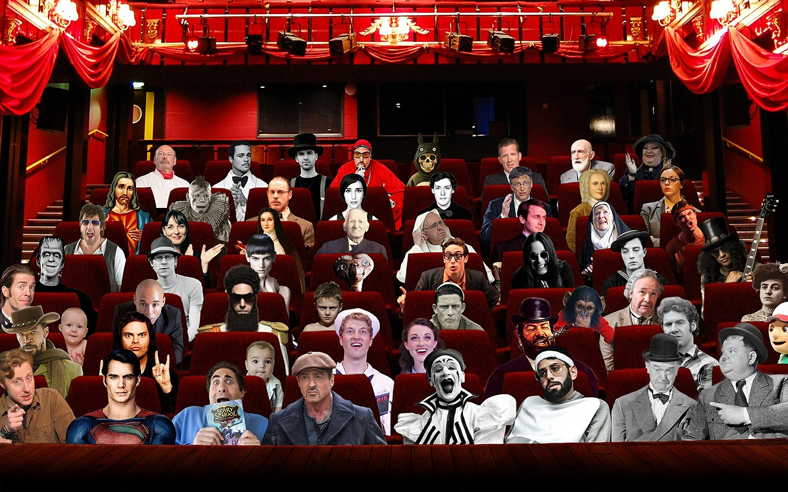

Narodziny kina ... - no wtedy jeszcze nas nie było. Wszystko jednak zaczęło się jeszcze zanim się urodziliśmy. Nasi rodzice aby obejrzeć film udawali sie do najbogatszej osoby na wsi, która to miała telewizor. Z czasem codziennością stały się wielkie samozapalające sie maszyny - to nie rakiety! To dawne telewizory. Nie nie nie jeszcze nie było w naszym kraju dostępnych komercyjnie komputerów. Należało zatem zając czymś czas, a może go dowartościować. Tym co nowoczesne było KINO! TO WŁAŚNIE TAM UDAWALI SIĘ NASI RODZICE. Dziś jednak kino przestało być nowoczesne i zpowszedniało. Jego miejsce zajęło VR z którego często korzysta się w domu. Aby połaczyć jedno z drugim narodziła się idea całkowitego odcięcia od realności na wirtualność. Dlatego przerabiamy a raczej udoskonalamy oglądanie filmów za pomocą naszej doskonałej przystawki podłanczanej do różnych zmysłow aby poczóc akcję filmu w 98%. Te dwa procent należy do Ciebie. Możesz w naszym kinie zmienić oglądany film w ramach 90 minut seansu, możesz wszystkie po trochę pooglądać. Każdy bowiem ma swój indywidualny seans.
Jesteśmy różni!
Dlatego tak doskonali!
Szanując naszą różność i indywidualność dajemy wam kino dostosowane nie do tłumu ale do was indywidualnie...
